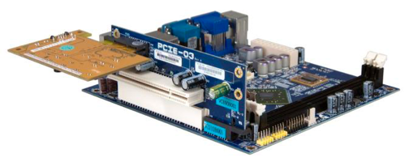

History of RAM <<
Previous Next >> Installing Memory Modules
Parity
Memory Module Width
Memory module width is measured by the number of bits that can be transferred. Memory began in 8-bit varieties, but has increased to 16 bits, 32 bits, and now 64 bits in current systems. Memory must be added in banks to ensure the width equals the width of the memory bus. For example, if you need 64 bits and a single module offers 64 bits, then it will have one module in the bank. Dual-channel memory requires double the amount, therefore two 64-bit (128 bit) DIMMs are needed in the banks, while three are required for triple-channel, as was mentioned earlier.
內存模塊的寬度由可傳輸的位數決定。內存最初以8位形式出現，但在當前系統中已增加到16位，32位和現在的64位。必須以存儲體的形式添加內存，以確保其寬度等於內存總線的寬度。例如，如果您需要64位，而單個模塊提供64位，則庫中將只有一個模塊。如前所述，雙通道內存需要兩倍的存儲量，因此存儲庫中需要兩個64位（128位）DIMM，而三通道則需要三個。

Parity and ECC
Parity is used to perform basic error checking and to ensure the memory contents are reliable. This memory is slower than non-parity, but adds the reliability needed for servers and certain desktop workstations.
Parity checking is a rather simple method of detecting memory errors, without any correction capabilities. Parity is signified in a single bit of data that is added to the transmitted data string. If the module normally would have seven bits of data, an eighth is added as the parity bit. If the module normally would have eight chips for data, a ninth chip is added for parity.
Every byte has a parity bit associated with it. In the case that seven bits make up the original data, there are eight total bits transmitted (seven original data bits plus one parity bit). In the case that eight bits make up the original data, a total of nine bits are transmitted (eight data bits plus one parity bit). The parity bit is set at write time, and then calculated and compared at read time to determine if any of the bits have changed since the data was stored. This type of checking is limited to detection of single bit errors. If two bits have been altered, the parity check will “pass,” and the error is allowed to possibly corrupt the data.
Parity checking can be implemented either as “0” parity or “1” parity. When the byte is stored, the number of zeros (or ones, if “1” parity is selected) is added up. The result is stored in the parity bit – “1” if odd, “0” if even. When that byte is read from memory, the bits are again counted and the result is compared against what was stored in the parity bit. A match means that the data was not changed from when it was stored (or that two bits were altered in such a way that the result is the same).
The process to determine the parity bit is the same, regardless of the number of original data bits transmitted. Typically, there are either seven or eight bits of original data.
The parity bit is determined by counting the number of “1” bits in a data string.
奇偶校驗用於執行基本的錯誤檢查並確保內存內容可靠。此內存比非奇偶校驗慢，但增加了服務器和某些台式機工作站所需的可靠性。奇偶校驗是一種檢測內存錯誤的相當簡單的方法，沒有任何校正功能。奇偶校驗在添加到傳輸數據字符串的單個數據位中表示。如果模塊通常具有七個數據位，則將八分之一添加為奇偶校驗位。如果模塊通常有八個芯片用於數據，則添加第九個芯片以實現奇偶校驗。 每個字節都有一個與之關聯的奇偶校驗位。在七位組成原始數據的情況下，總共傳輸了八位（七位原始數據位加一個奇偶校驗位）。在八位組成原始數據的情況下，總共傳輸九位（八位數據位加一位奇偶校驗位）。奇偶校驗位在寫入時設置，然後在讀取時進行計算和比較，以確定自存儲數據以來是否有任何位發生了更改。這種類型的檢查僅限於檢測單個位錯誤。如果更改了兩位，則奇偶校驗將“通過”，並且允許該錯誤可能破壞數據。 奇偶校驗可以實現為“ 0”奇偶校驗或“ 1”奇偶校驗。存儲字節時，將加零（如果選擇了“ 1”奇偶校驗，則為零）的數目。結果存儲在奇偶校驗位中-如果為奇數，則為“ 1”；如果為偶數，則為“ 0”。當從內存中讀取該字節時，將再次對這些位進行計數，並將結果與奇偶校驗位中存儲的結果進行比較。匹配表示數據從存儲時起就沒有改變（或以結果相同的方式更改了兩位）。 不管發送的原始數據位數是多少，確定奇偶校驗位的過程都是相同的。通常，原始數據有七位或八位。 奇偶校驗位是通過對數據字符串中“ 1”位的數量進行計數來確定的。

History of RAM <<
Previous Next >> Installing Memory Modules